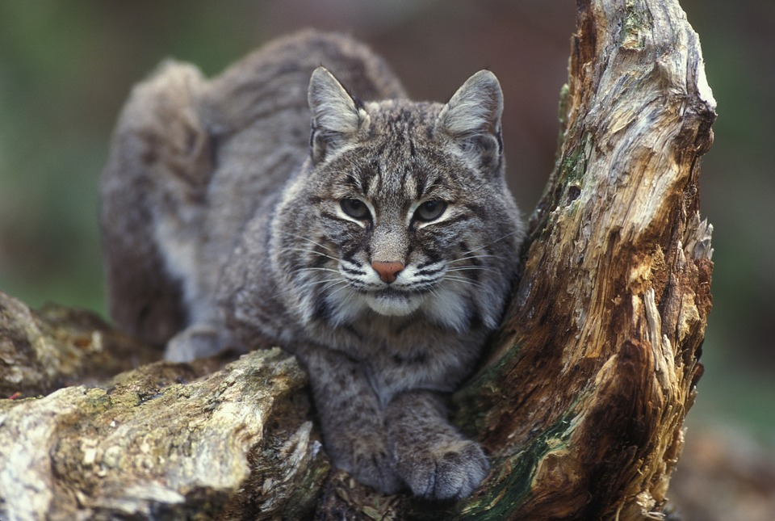
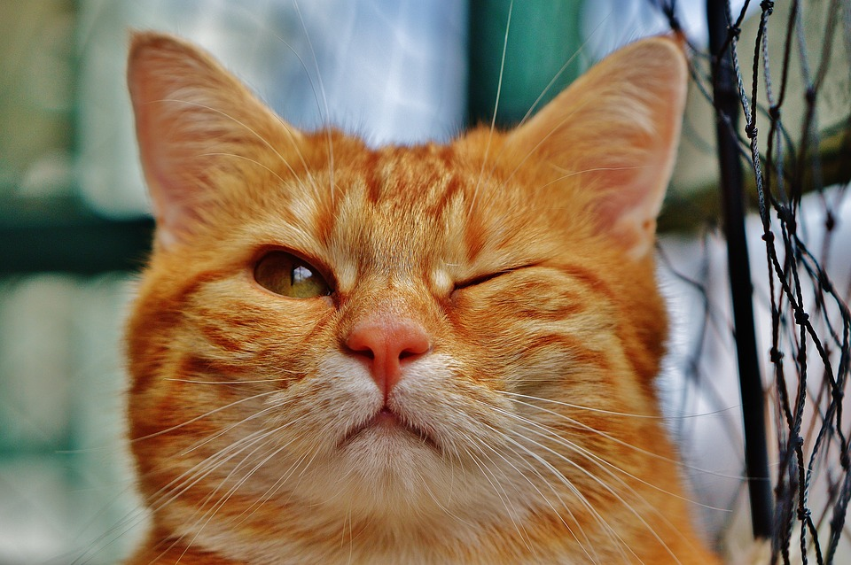

Madison Hoover
I guess I could do a page on my life or some interesting facts about myself, but I know the cyber world is not interested in any of that nonsense. Nothing could be more exciting than learning more about the beautiful species of felis catus: the domestic cat. I am inviting you on a journey through catopia, a wonderous place full of feline fantasy, frisky business, and downright cuteness.
The domestic cat has a rich history, as they ascended from mighty feline ancestors that used to rule over the dinosaurs. Ancient Mayan stories speak of the sabertoothed panthers that autonomized the animal kingdom with their cunning and hunting prowess. Over many years of evolution, however, several species went extinct and the domestic cat was born. I think people decided that leopards and cheetahs weren't quite suitable for household living. But don't be fooled by the domestic cat's seemingly adorable and innocent disposition, the blood of their fierce ancestors still runs hot through their veins.
Cats have been known to roam the streets of large cities, sometimes outpopulating the amount of people in a given area. If I were you, I would just pick one up off the street, give it a name, and take that little furball home as your own. My favorite cat, of the three I have, actually came to me from out of a sewer drain and instantly imprinted on me. I took her home immediately and claimed her as my own. True story. Anyways, I would also recommend adopting a cat from a shelter. They are normally very inexpensive (more $ = better cat toys) and it all goes to a good cause. However, I went to a famous department store in London called Harrod's when I lived over there, and they also sell purebred Persian cats for the low price of $4000. I cannot make these things up. Whichever way you claim your kitty, know that cat ownership is lifelong commitment to love, joy, and occasional 4 am wake up calls for god knows what reason your cat had in mind.
| American shorthair | Scottish short eared | Persian |
| Garfield-style | Indonesian spotted | Tabby |
| Hairless | Siamese | Big kitty |
| Irish curlyhair | Tortoise shell | Lucky black kitty |
More information on cat breeds can be found here: Take me to the kitties!
Get a load of these cute kitties by clicking on the cat below!
